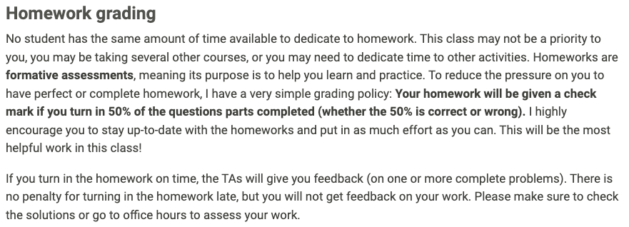

05:00
Lesson 0: Introduction
Still me!
Course Learning Objectives
At the end of this course, students should be able to…
Apply and interpret some hypothesis-testing procedures for two-way and three-way contingency tables
Compute and interpret measures of association for binary and ordinal data.
Calculate and correctly interpret odds ratios using logistic regression, make comparison across groups and examine relationship between binary outcome and predictor variables.
Apply appropriate model-building strategies for logistic regression. Effectively use statistical computing packages for contingency table and logistic regression procedures.
Perform Poisson regression analysis using count data and interpret model estimates, make comparison across groups and examine relationship between outcome and predictor variables.
Coherently summarize methods and results of data analyses, and discuss in context of original health-related research questions to audiences with varied statistical background.
New way to record/view lectures
I will be using Echo360 to automatically record time from 1-3pm in this room!
It will be LIVE
So you can watch in real time, but won’t be able to interact with us
Might have a 10 second lag
No need to tell me if you cannot make class
Here is the link to our site! I’ll keep posting it on the weekly pages
- Currently a public link, but working on getting everyone an account so we can make it private
I don’t have to post anything after class, so no issues with me forgetting to post it
New Exit ticket style
All the questions are optional
But still open the link and submit!
5 of the exit tickets are dropped!
Some important tasks
Star the class website: https://nwakim.github.io/S2024_BSTA_513/
Complete the WhenIsGood for office hours
If your calendar feels set, take 5 mintues to fill this out now!
Complete by Thursday at 11pm!!!
Highly suggest that you make an appointment with a learning specialist through Student Academic Support Services!
Syllabus
- Not many changes from last quarter’s syllabus
- Assessment breakdown is the same
| Course activity | Type of Assessment | Due Date | Percentage of final grade (BSTA 513) | Percentage of final grade (BSTA 613) |
| Homework | Formative | Every 1-2 weeks | 33% | 28% |
| Quizzes | Summative | 4/22, 5/13, 6/3 | 25% | 25% |
| Project Labs | Formative | Every 2-3 weeks | 25% | 25% |
| Project Report | Summative | 6/13 | 10% | 10% |
| Exit tickets (Attendance) | N/A | Twice Weekly | 5% | 5% |
| Mid-Quarter Feedback | N/A | 5/2 | 2% | 2% |
| 613 Readings | Formative | Approx. every other week | 0% | 5% |
Quizzes
Might be delivered slightly differently
We will still have the 50 minutes at the end of class to take the quiz
- And the quiz should only take 30 minutes
However, RPV does not have private rooms for those who need it
I am work-shopping ideas on how to deliver the quiz, including:
Take home and turn in on Wednesday
Online vs. on paper
Ways to mitigate cheating
Homework grading
Slightly new grading
Now, need to turn in 50% of the homework completed to get check mark
Noticed that demonstrating understanding in the project was correlated with completing the homework*
No formal analysis was done on this
And there may be confounders like time available to commit to this class in general
Either way, I think practice is the most important tool for learning
- So I want to us to practice the work, but I’m trying to balance this with added stress
Homework grading in syllabus

Any questions on how this quarter is going to go?
How to print slides
Anyone have issues with this?
- I can show how to do it in Chrome and Safari
Let’s take 10 minutes for Student Survey
11:00
Now we take a 10 minute break!
10:00